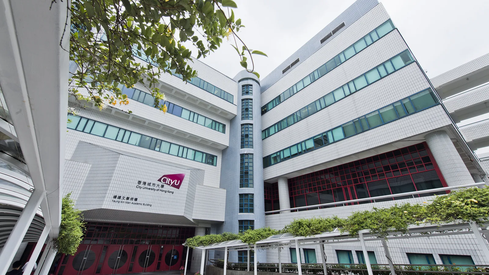

Welcome
DAI 2026 invites the international distributed AI community to Hong Kong for four days of research exchange on the science, systems, and societies of agentic AI. The program centres on four submission tracks and seven topic areas spanning agent infrastructure, learning, coordination, markets, embodied systems, and AI for science.
Important Dates
Submission Timeline
All deadlines are 23:59 Anywhere on Earth unless otherwise noted. No rebuttal period is planned.
| Milestone | Date | Notes |
|---|---|---|
| Submission System Opens | OpenReview opens | |
| Workshop Proposal Submission | Open workshop proposal deadline | |
| Sister Conference Presentation Track Opens | Rolling until capacity is reached | |
| Workshop Notification | Organiser notification | |
| Abstract Registration | Required for full paper submission | |
| Research / Industry Submission | Full paper deadlines | |
| AI Paper Track Submission | AI contribution disclosure required | |
| Notifications | Research decisions; AI Paper Track decisions | |
| Camera-Ready | - | |
| Conference Dates | Hong Kong · 4 days |
All times Anywhere on Earth (AoE, UTC−12)
Program
Program at a Glance
Four days. One day of community-led sessions, two days of main program, one day of focused discussion and community meetings.
Workshops & Tutorials
Community-led workshops and practical tutorials introducing methods, datasets, and emerging problem areas.
Sun · 29 NovMain Conference
Paper sessions, invited talks, posters, and panels across the seven topic areas and the AI Paper Track. Keynote, banquet, and awards on Day 03.
Mon – Tue · 30 Nov – 01 DecDiscussion & Closing
Focused exchange, town halls, community meetings, and closing remarks.
Wed · 02 DecAttending
Hosted at City University of Hong Kong

{kind=link}
Call for Sponsorship
Support DAI 2026 in Hong Kong
DAI 2026 invites research labs, companies, foundations, and community partners to support student participation, workshops, tutorials, awards, and public-facing exchange around distributed and agentic AI. A sponsorship prospectus is in preparation; early expressions of interest are welcome through the organizing team.